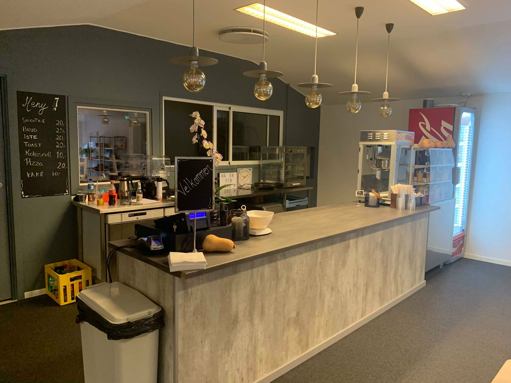
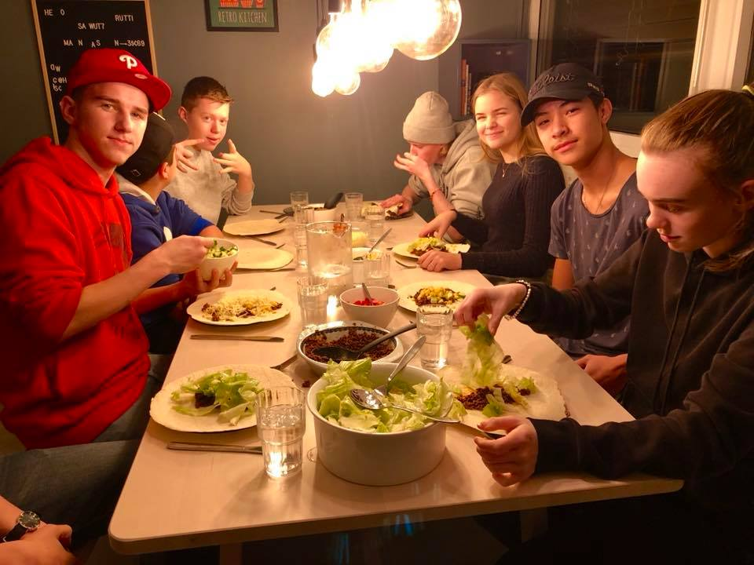

Cafeteria

Common Room

Common Room
Playing table football

Cinema

Movie Time

Taco Friday

Halloween Party

Common Room

Table Tennis
A youth club is definitely a valuable institution for every community. But it needs more than just to have a place for the youth to go to. Otherwise it can do more harm than good. According to the Institute for Public Policy Research (IPPR), ‘just hanging out at a club can have a detrimental impact on young people’s lives, making them more likely to smoke, drink and become teenage parents’. Youth clubs need to offer activities like sports or arts to help children and teenagers which will give them structure in their lives.(read more) Østsiden Youth Club in Fredrikstad offers such activities for his members and is a great example how it should be. Ruben Johansen tells what he likes about the youth club and how it helped him to develop his personality.
The petition for a new Youth Club in Fredrikstad started.
The petition ended and got 399 signatures.
The renovation work for the new building started.
On the 14th the Østsiden Youth Club in Fredrikstad opened.
It all started in 2005, several youth clubs around Norway had to be cut from the communal budget and got closed down. In Fredrikstad this was no different. For the years to come after that more public youth clubs got closed in and around Fredrikstad and the teenagers living there felt betrayed. 10 Years later, and the budgets for the youth clubs hadn’t increased too much and the ones that were open didn’t have the resources to do maintenance on equipment or the buildings they were in. But in 2015 teenagers in Fredrikstad decided that enough was enough and took the matter into their own hands. They posted a very well written article on a webpage called “Minsak.no” they explained and argued for a brand new and more developed club (read more). This article also included a petition where teenagers and youth who would like such a club to open, could sign the petition. This turned out to be the case and they got 399 signatures! This started a big project which opened only 5 weeks ago.
Cafeteria
Common Room
Common Room
Playing table football
Cinema
Movie Time
Taco Friday
Halloween Party
Common Room
Table Tennis
It was a big challenge to found this new club. After all the hard work from many teenagers involved in the process of getting the petition handled and reported to the right authorities, the work with establishing this new club started. We were so lucky to get a few words with the leader of “Fritid i Fredrikstad Østsiden”. He gave us some valuable information and insights into how this all started and how the project proceeded and until it was finally ready.
Team spirit and persistence were the core success factors that the story about the youth club in Fredrikstad got a happy end. The teenagers got heard and the politicians and the commune worked together to form a new place for the youth and to strengthen the young population in Fredrikstad. Let this article be a reminder if your town or city needs measures like this, of how and why you should petition and band together. Even the youth have the ability to argue and influence the local politicians to look differently on problems arising in the local society.